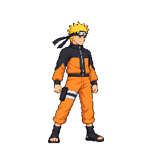

Frame player
Approved title neutral

Approved title combat

Final technical verdict: HOLD for all eleven selected alternatives. This gallery compares candidate frames from the frozen, actual 48-color quantized pack with base frames read directly from the approved production sheet. Base contact rectangles also come from approved production metadata, including its overrides. The frozen atlas's repacked base half is diagnostic where source sidecars differ. This page does not approve art or promote candidates into the game. Runtime playback and browser verification are not claimed.
All 65 candidate frames were compared with approved base cells and the approved title-style neutral/combat references. Timing and frame counts match all eleven bases. Seven of nine attacks fail the production contact envelope; six frames violate the prescribed cell margin, four with confirmed clipped pixels. See the full Astra report, 65-frame anatomy table, production contact-edge comparisons, and frozen cell bounds and contract metadata.
Projected manual measurements are coarse, not certified anatomical lengths: H±4 px, T±6 px, A/L±12 px, S±4 px, with additional unbounded depth/foreshortening exclusions. Shoulder width is excluded because these figures are three-quarter views. No head-only pass is claimed.

| Alternative | Strict / margin | Technique and endpoints | H/T/A/L/S ranges · px |
|---|
Delta order is x, y, right edge, bottom edge (candidate auto-box minus approved production base box). Every edge must be within ±12px. Reactions correctly have no attack rectangles.
| Alternative | Frame | Base box | Candidate box | Edge delta | Result |
|---|
The public preview intentionally contains only the selected quantized comparison, approved production references and compact audit metadata. Versioned raw sources, parts, prompts and cumulative generator call history remain in the repository art tree. See the task’s local production/alts/ATTEMPT_INVENTORY.md for the complete immutable source inventory and call budget.
Anatomy measurements, all frames · Measurement data · Exact contact boxes and edge deltas · Diagnostic pack log